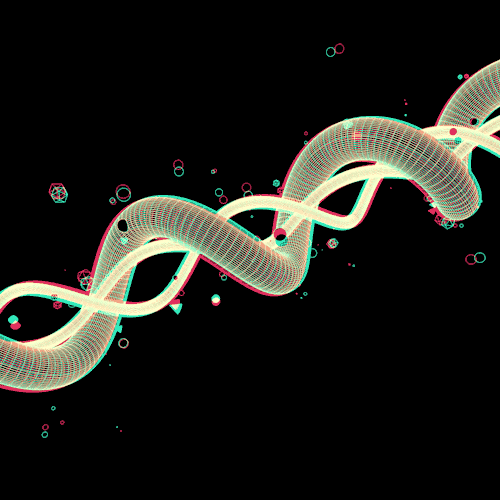

<ion-view view-title="BiologyAPP">
  <ion-content class="padding">
    <center>
    	
    		<h4><b>DAVID AREVALO</b></h4>
    		<div class="row">
    			<div class="col-md-6"><h1 class="titulo"></h1></div>
    			<div class="col-md-6"></div>
    			<div class="col-md-6"><h1 class="titulo">APP</h1></div>
    		</div><br>
    		<div class="row">
    			<div class="col-md-12">
    				
    			</div>
    		</div>
    		<div class="row">
    			<div class="col-md-12">
    				<p class="parrafo">La palabra biología está formada por dos vocablos griegos: bios (“vida”) y logos (“estudio”). Se trata de una ciencia natural que se dedica a analizar las propiedades y las características de los organismos vivos, centrándose en su origen y en su desarrollo.</p>
    			</div>
    		</div>
    		<div class="row">
    			<div class="col-md-12">
                <br>
                <br>
                
                

                    <iframe width="560" height="315" src="https://www.youtube.com/embed/m8iuW-qtPBQ" frameborder="0" allow="accelerometer; autoplay; encrypted-media; gyroscope; picture-in-picture" allowfullscreen></iframe>

              

              </div>
            </div>
            </ion-content>
            </ion-viewn
     
    

            
    			</div>
    		</div>
    		
    	
    	

    </center>	
    

    
  </ion-content>
</ion-view>
